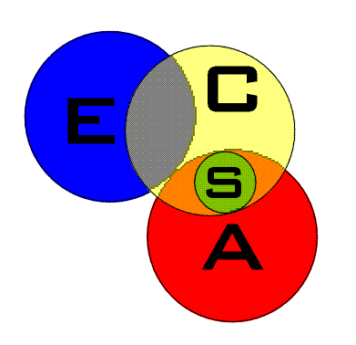

|
| 2010 Web Sites of the Month | ||
|---|---|---|
|
| Web Site of the Month - January 2010 |
| by Lothar Janetzko |
| Phillip Johnson Steals the Microphone |
This month's web site review looks at an article that discusses the book Defeating Darwinism by Opening Minds by Phillip Johnson, a law professor at the University of California, Berkley. The book was published in 1997 by Inter Varsity Press and is Johnson's third book in his debate with naturalistic evolution. His other two books are Darwin On Trial and Reason in the Balance.
The article begins by explaining why a law professor decided to take on the evolutionists. "It seems that Johnson became aware of a significant difference between the way the theory of evolution is presented to the public and the way it's discussed among scientists. To the general public, evolution is presented as being settled with respect to the really important questions. Among scientists, however, there is still no consensus as to how evolution could have occurred." The writer of this article points out that Professor Johnson has concluded that "what keeps the 'evolution-as-fact' dogma alive is not scientific evidence at all, but rather a commitment to the philosophy of naturalism."
The article continues by discussing what Naturalism is and then takes a closer look at Johnson's book Defeating Darwinism. The discussion is presented under the following headings:
The Intelligent Design section points out that Johnson believes information content and irreducible complexity are strong physical evidence for intelligent design.
The article provides a good look at Johnson's book and recommends that you obtain a copy to read for yourself to help you think critically regarding questions about creation and evolution.
| Web Site of the Month - February 2010 |
| by Lothar Janetzko |
| "Scientific presentation of a plausible creation model of origins" |
This month's web site review looks at a web site that provides an FAQ (Frequently Asked Questions) about Creation Science. The site begins with a note on terminology. It is interesting to note that there are many different definitions of evolution and it is important to understand what definition is being used by various authors when reading articles about evolution.
This particular FAQ uses the definition that "most of the world uses, that is, evolution refers to macroevolution". Webster's definition is as follows:
macroevolution n. large-scale and long-range evolution involving the appearance of new genera, families, etc. of organisms
evolution n. an unfolding, opening out, or working out; process of development, as from a simple to a complex form, or of gradual, progressive change, as in a social and economic structure
The FAQ continues by discussing the scientific creation model. This model "states that life on Earth originated as the result of one or more 'creation events'. A creation event may be identified as the instantaneous appearance of new matter out of nothing including but not limited to, fully functional, completely developed organisms." This model is presented by using the following outline to present answers to many questions people have regarding creation and evolution:
You will find answers to many questions that are provided for "consideration as a viable alternative to evolution."
| Web Site of the Month - March 2010 |
| by Lothar Janetzko |
| Discover truth using simple everyday logic |
This month's web site review looks at a site that discusses Creation vs. Evolution and Intelligent Design issues. The home page is organized into three zones, a left, middle and right zone. The left zone provides links to
The middle zone is the largest and provides the detailed information about any link that you select from the left zone or right zone. On the home page the middle zone has a discussion about "Debating the Origins of Life". The right zone provides links to Archives, eXtreme evolution - outlandish stories on the logic of origins, and Video on Demand.
Following the link to Articles you will find that the middle zone changes to Article Archives and links to Evidence for Intelligent Design and General Articles. The articles are organized into the following categories:
The Design category has links to 24 different articles.
Following one of the Debate links you will arrive at the www.controversialforums.com website. This site is "The place to discuss controversial issues and have debates about life's most controversial topics!" On this site you will find Controversial Forums, Online DEBATE of the HOTTEST Topics. One of the Forums is the Science forum which contains discussions regarding scientific developments and subforums including topics such as
There is a lot of content to explore on these sites so just follow links that you find interesting. You can also sign-up to receive monthly email updates to receive notifications whenever new articles are added to the Obvious Truths site.
| Web Site of the Month - April 2010 |
| by Lothar Janetzko |
| "Evolution is that great all-encompassing paradigm that explains everything, yet lacks much explanatory power" |
This month's web site review looks at an article we found while searching the internet for an article on creation and evolution relating to April Fool's Day. Although this article was not written as an April Fool's Day joke, it really presents many interesting details regarding how evolutionists are trying to fool people into believing that evolution has all the answers regarding the origin of life.
The article begins by making an interesting observation about the verbal manipulation that is used especially in the creation/evolution debate. He points out that it is similar to what George Orwell wrote about in his famous novel 1984. In his novel, Orwell's protagonist Winston uses a "deceptive language called Newspeak to eliminate words and thoughts harmful and challenging to governmental control."
The article continues by discussing an article from the Associated Press that the web author believes to be a masterful work in propaganda. He believes that it is very important that readers understand how word subtlety is used to advance a biased evolutionist's view.
Under the title, "What's Science, What's Evolution," you will find a lengthy discussion about how these terms are used by various evolutionists.
Continuing in the article you will find a section with the title, "The False Dichotomy: Religion and Science." Here you will find an interesting discussion about what makes something a religion, and suggests evolution really just another religion.
More interesting sections follow, so just keep on reading. Sixty-four footnotes are referenced throughout the article.
| Web Site of the Month - May 2010 |
| by Lothar Janetzko |
| Science Tracer Bullets Online |
This web site review looks at how the Library of Congress chooses to present information about extraterrestrial life. Before going into any detail it is important to note that the site provides a link to a Disclaimer which states that "these links are being provided as a convenience and for informational purposes only; they do not constitute an endorsement or an approval by the Library of Congress of any of the products, services or opinions of the corporation or organization or individual."
The Library of Congress provides Science Tracer Bullet Series to help researchers locate information on science and technology subjects. "With brief introductions to the topics, list of resources and strategies for finding more, they help you stay 'on target.'"
Having access to such a great deal of information it is interesting to see how information about extraterrestrial life is presented by the Library of Congress Tracer Bullet 07-9. This Bullet is organized as follows:
An interesting statement is made in the Scope section of the Bullet. "Although its existence (extraterrestrial life) remains purely hypothetical, due to the lack of universally accepted scientific evidence, there are several hypotheses about how and where life might have emerged in the Universe, and whether or not those origins resemble the origins of life on Earth."
You can use this web site to explore the wealth of information available in the Library of Congress since most of the links on this site reference the Library of Congress Online Catalog.
| Web Site of the Month - June 2010 |
| by Lothar Janetzko |
| "False facts are highly injurious to the progress of science, for they often endure long... Charles Darwin, The Descent of Man" |
This month's web site review looks at a site I recently discovered by searching the Internet. On the main page of the site you learn that "this site has been developed because many people believe that macro-evolution is the driving force behind the development of living organisms and the appearance of new species. This is not strange, because in many cases on many different institutions macro-evolution is being taught as a fact rather than a theory."
The site provides detailed information on many different subjects to allow the reader to investigate to see if the theory of evolution fits the facts or not. Currently the main page of the site provides links to the following subjects:
The site also provides links to Contact, Research Material and Links. The Contact link is provided to allow readers to ask questions, make remarks, comments or suggestions. On the Research Material link you can place orders for the following books from Amazon.com: Icons of Evolution, Darwin's Black Box, Evolution: A Theory in Crisis and What Darwin Didn't Know. The Links link just states "Sorry, still working on it!"
As with most web sites, there is much to explore on this site so just follow links that you find interesting and investigate the facts as to the reliability of the Evolution Theory.
| Web Site of the Month - July 2010 |
| by Lothar Janetzko |
| New World Encyclopedia - Organizing knowledge for happiness, prosperity, and world peace |
This month's web site review looks at an article found in the New World Encyclopedia. The introduction to the article states that "it focuses on modern scientific research on the origin of life on Earth, rather than religious belief, creation myths, or the specific concept of spontaneous generation." The article begins by presenting a brief discussion of abiogenesis, the generation of life from non-living matter, and dismisses the classical notions of abiogenesis that are now known as spontaneous generation. It points out that today abiogenesis refers primarily to the hypotheses about the chemical origin of life.
It is interesting to note that the article points out that the various scientific models being proposed for the origin of life are necessarily speculative. "Proposals for the origin of life remain at the stage of hypotheses, meaning they are working assumptions for scientists researching how life began. If test results provide sufficient support for acceptance of a hypothesis, then that is the point at which it would become a theory."
After this introduction, the article provides a table of contents with links to the following topics:
There is much to explore in this New World Encyclopedia article. You must understand however that "a few facts give insight into the conditions in which life may have emerged, but the mechanisms by which non-life became life are still elusive."
| Web Site of the Month - August 2010 |
| by Lothar Janetzko |
| A Simple Classification Scheme |
This month's web site review looks at a site where the author, Wesley R. Elsberry, presents a fairly simple classification scheme that he uses to classify the diversity of opinion regarding the issue of origins and evolution. He begins his article by presenting a Venn diagram to help illustrate things:
 |
E stands for those who accept evolutionary change in the sense of common descent of life on earth. C stands for those who believe in a creator. A stands for those who reject evolutionary change or evolutionary mechanisms. S stands for "scripturalists", who base their beliefs upon their interpretation of some text they hold sacred. |
From the diagram you can see that there are six different categories and the article author assigns names to each category. By this classification system the author shows why there are so many different opinions regarding creation and evolution. He also provides a list of people he believes fall into each category or sub-category.
At the bottom of the web page you will find links to: Topics, Projects, Services, Features, People, Books, and Links that you can explore to learn more about this particular web site and why it was created.
| Web Site of the Month - September 2010 |
| by Lothar Janetzko |
| "Can the questions about origins be reconciled?" |
This month's web site review looks at a brief article I found written by a Jewish rabbi. He begins by stating that "the Torah states clearly that the world has a Creator and He created a complete world in 6 days. Science says the world came about on its own, and in a long slow evolving process over billions of years. Can the two be reconciled?"
He points out that many people will say it can't, and others try very hard to find reconciliation. He believes no reconciliation is necessary as there is no contradiction.
He presents interesting little illustrations to point out that no contradiction exists regarding the age of the universe and the evolution of species.
He concludes his article by pointing out that "the fundamental difference between Creation and Evolution is not in the past, but in the present and future. The divergence lies primarily in whether the world and all its inhabitants, including you, exist randomly or for a reason."
I found this site quite interesting for it provided some insights not usually found on most creation versus evolution websites.
If you are interested in the Jewish view on other topics you will find links to Library, Philosophy and Creation at the top of the web page.
| Web Site of the Month - October 2010 |
| by Lothar Janetzko |
| The history of the creation-versus-evolution debate |
This month's web site review looks at a book by Del Ratzsch found on Amazon.com. It examines the history of the creation-versus-evolution debate and critiques the entrenched positions that he argues merely impede progress toward truth. The book contains a preface, thirteen chapters, notes and a bibliography. Most of the book can be previewed by clicking on the Look Inside! link found on the Amazon.com website.
The preface provides some interesting details about the upbringing of the author. He points out that the aim of the book is not to convince readers to accept any particular resolution to the creation-versus-evolution debate, but rather to point out those things that should not convince one.
The first chapter of the book, Introduction, starts with "Some public disagreements transcend the category of mere debate and become social institutions." This is the case regarding the creation-versus-evolution debate. Because of the strong opinions on both sides of such disputes, little actual communication takes place. In the introduction you will find two quotes. One by Henry Morris, and another by Richard Dawkins, show how strongly they feel about their respective positions. The introduction then presents an outline for the rest of the book.
The chapter titles for the rest of the book are as follows: 2) Darwin: The Historical Context, 3) Darwin's Theory: A Brief Introduction, 4) Darwin's Theory: Popular Creationist Misunderstandings, 5) Twentieth-Century Creationism: The Historical Context, 6) Creationist Theory: A Brief Introduction, 7) Creationist Theory: Popular Evolutionist Misunderstandings, 8) Philosophy of Science: The Twentieth-Century Background, 9) The Nature of Science: A Contemporary Perspective, 10) The Nature of Science: Popular Creationist Mistakes, 11) The Nature of Science: Popular Anticreationist Mistakes, 12) Theistic Evolution: Catching It from Both Sides and 13) Conclusion.
| Web Site of the Month - November 2010 |
| by Lothar Janetzko |
| "The ASA has no official position on evolution" |
This month's web site review looks at the Creation and Evolution page of the American Scientific Affiliation (ASA). ASA "is a fellowship of men and women of science and disciplines that can relate to science who share a common fidelity to the Word of God and a commitment to integrity in the practice of science. ASA was founded in 1941 and has grown significantly since that time."
The Creation and Evolution home page of ASA points out that "No topic in the world of science and Christianity has fostered the intensity of discussion and disharmony with evangelicals as the source of biological diversity." On the home page, which is organized into two sections, you will find links to many different topics. The left section, which is the smaller one, has links that are provided under the category of Topics such as
Below these links you will find a number of quotes provided by different authors. The right section, which is the larger one, provides access to more current information about the creation/evolution debate. Here you will learn why the ASA has no official position on evolution, recent Gallup Poll results and the spectrum of creation views held by evangelicals. Also you will find links that are related to recent news concerning creation/evolution.
The site "currently contains more than 50,000 searchable text pages and 40,000 images of both publications and handwritten manuscripts. There is also the most comprehensive Darwin bibliography ever published and the largest manuscript ever assembled".
There is much to explore on this web site so just follow links that you find interesting.
| Web Site of the Month - December 2010 |
| by Lothar Janetzko |
| "You should only believe what there is evidence for." |
This month's web site review looks at a site where a husband and wife discuss how to talk to kids about evolution and creation. The format of the discussion is that the wife's questions and comments are in italics, and the husband's answers follow in regular type. At the end of the discussion you will find detailed information about the authors of this web site.
The discussion begins with the wife asking, "Why is there a problem with evolution in the first place?" The answer given points out that there is no evidence to support the theory of evolution from amoeba to man.
The interesting part of the discussion takes place when the wife talks about their son's eighth-grade biology textbook. Many parents have faced the problem of how to deal with the misinformation presented in many school textbooks. In discussing the biology textbook many different topics are addressed such as
The important point made during the discussion of the various topics is that before parents can talk to their kids about evolution, they must have a good understanding of evolution itself. Interesting insights are given as to how students ought to react when the theory of evolution is taught in science classes.
| Quick links to | |
|---|---|
| Science Against Evolution Home Page |
Back issues of Disclosure (our newsletter) |
| Web Site of the Month |
Topical Index |